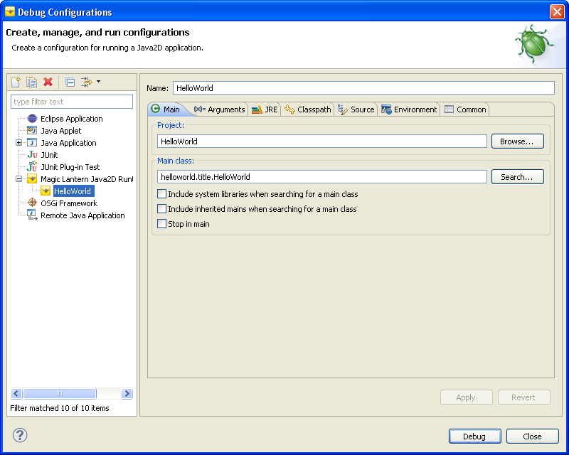
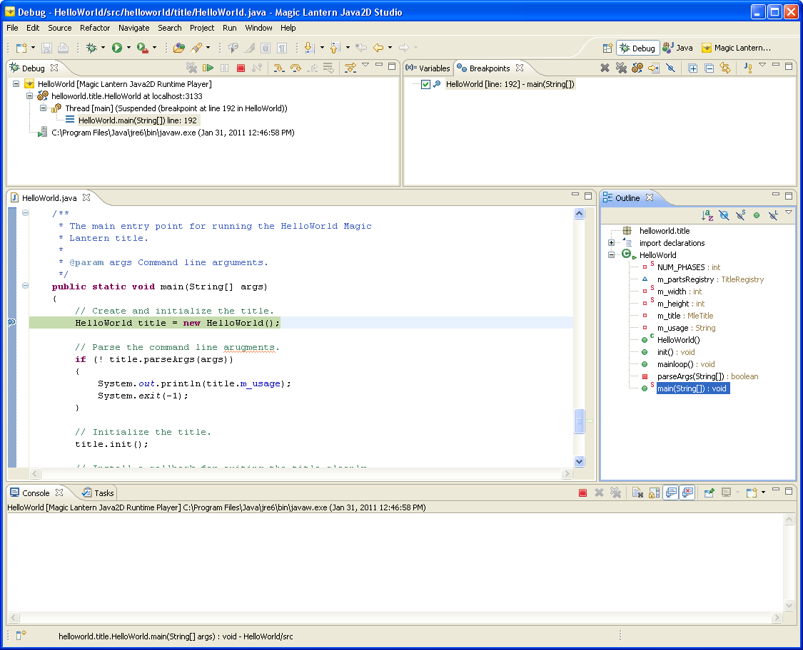

The Java development toolkit (JDT) includes a debugger that enables you to detect and diagnose errors in your programs running either locally or remotely.
The debugger allows you to control the execution of your program by setting breakpoints, suspending launched programs, stepping through your code, and examining the contents of variables.
The debugger has a client/server design so you can debug programs running remotely on other systems in the network as well as programs running locally on your workstation. The debug client runs inside the workbench on your workstation. The debugger server runs on the same system as the program you want to debug. This could be a program launched on your workstation (local debugging) or a program started on a computer that is accessible through a network (remote debugging).
To debug a Magic Lantern Java2D title, you can use the Eclipse Java Debug Launch Configuration. A debug launch configuration will be created for you when you create a Run Launch Configuration (see Creating a Launch Configuration). The debug launch configuration will run the Java debugger on your title. To see the debug launch configuration that was generated for you for HelloWorld, select "Run->Debug Configurations..." from the main Eclipse menu bar.
Note: You will have to be either in the Java or Debug perspecitve to see the Debug Configurations menu entry. The Magic Lantern perspective does not yet provide a shortcut to launch title applications.
Figure 4.1 shows the Debug Launch Configuration for the HelloWorld title.

Figure 4.1: Debug Launch Configuration for HelloWorld Title
Selecting "Debug" from the launch configuration will start a Java debug session. The title will run until a breakpoint is reached. When the breakpoint is hit, execution is suspended, and you are asked whether to open the Debug perspective. Click Yes. Notice that the process is still active (not terminated) in the Debug view. Other threads might still be running.
Figure 4.2 shows the Debug perspective with a breakpoint set in the HelloWorld main() method.

Figure 4.2: Debug Perspective During Active Debug Session